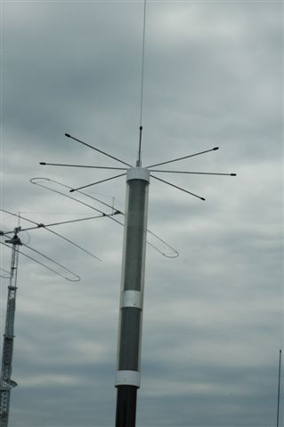
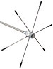

Cap Hat How To
Last Modified:
Wed, December 30, 2009
Basics
Building your own is half the fun.
Commercial cap hats are universally too small, usually incorrectly designed, and almost always mounted too close to the antenna's coil. As pointed out in the Antenna Cap Hats article, there are a few rules you have to follow if you want them to be worth the effort and hassle. This article is an attempt to rectify the shortcomings of commercial units.

As pointed out in the aforementioned article, for maximum benefit, you have to mount a cap hat as far away from the coil as possible. That is, at the very end of the whip, but obviously that isn't an easy task for several reasons.
First, most cap hats are designed to be attached using the ubiquitous 3/8x24 threads, and most whip material is too flimsy to support even a modest cap hat. As a result, too many folks mount theirs directly (and incorrectly) atop their coil housings as shown at left. Or at best, a few inches, to a couple of feet, above the coil. Again, no matter where it is installed, the input impedance will increase. HOwever, that alone doesn't guarantee the increase is positive.
The cap hat on the left decreases the coil's Q which increases its losses, thus giving one a false impression that performance was increased, when it fact the opposite is true. It's interesting to note that one cap hat manufacturer actually instructs the user to mount it atop the coil.

A DX Engineering cap hat is shown at right. If the individual spokes of the DX Engineering cap hat were connected, the effective capacitance would increase considerably. To put this in perspective, a 3 foot diameter cap hat, consisting of just 6 spokes, mounted 60 inches above the coil, will increase the effective whip length by about 60% of it's diameter, or about 20 inches (≈80 inches overall). If the ends are connected like a wagon wheel (as shown right), the effective length increase is about twice the diameter, or about 2.5 times better than spokes alone (≈125 inches overall). Obviously, this increases the low-limb 'snagging' problem,

 Shown at left was my first attempt at an efficient, closed loop cap hat, using the DX Engineering hub. I purchased 3 of their 48 inch rods, bent them into circles as shown. The effective diameter is about 32 inches. There are two drawbacks. One is the aforementioned 3/8x24 mounting (3/8 by 36 inch solid mast), and the other are the circles which are rather stiff. Hitting an overhead limb with this combination would certainly cause damage to the antenna, no matter how well it is made. There had to be a better solution.
Shown at left was my first attempt at an efficient, closed loop cap hat, using the DX Engineering hub. I purchased 3 of their 48 inch rods, bent them into circles as shown. The effective diameter is about 32 inches. There are two drawbacks. One is the aforementioned 3/8x24 mounting (3/8 by 36 inch solid mast), and the other are the circles which are rather stiff. Hitting an overhead limb with this combination would certainly cause damage to the antenna, no matter how well it is made. There had to be a better solution.
With the help of Ken Muggli, KØHL (who did the drawing and machining) I came up with an easy to make a cap hat and hub, which is light weight, has relatively low wind loading, yet is flexible enough to absorb some physical abuse without overly stressing the antenna it's attached to.
What follows are the plans, suppliers, etc. for building one of your own. As Julia Childs would have said, Bon Appetit.
The Plans

 Ken Muggli is a first-rate draftsman, and a fine machinist as you can see. You can click on the photo at left (or drag and drop), and it will open up to full-size. It's 400 k, so it'll take a moment to load, but should print out in very fine detail. A completed hub is shown at right.
Ken Muggli is a first-rate draftsman, and a fine machinist as you can see. You can click on the photo at left (or drag and drop), and it will open up to full-size. It's 400 k, so it'll take a moment to load, but should print out in very fine detail. A completed hub is shown at right.
The hub is made from 6160 extruded aluminum bar, 1.5 inches in diameter,and just shy of 1.2 inches long. The peripheral holes are .125 (1/8) inches, and the set screws are all 10x32; six at 1/4 inch long, one 3/8 inch long. The hub itself weighs just one ounce. Material for the hub was purchased from Speedy Metals. The set screws were from Micro Fasteners.
The main support hole is .200 inches, and requires some explanation.
While Ken and I were playing with the basic designs, I went through about $50 worth of 1/8 inch, brass welding rod. While not sturdy enough for daily use, it is easy to solder and bend. This made the various designs easy to construct, but not always as effective as we would have liked. One very important attribute needed to be discovered up front, and that was how to support the cap hat effectively at highway speeds, yet offer some flexibility in case you snagged a low-hanging limb.
Digressing for just a moment. Believe it or not, there is only one supplier of 102 inch, 17-7 stainless steel whips, no matter where you buy one. They start out life as rolled wire, .210 inches in diameter. The wire is straightened, and ground into the common size, and shape we all know. Starting at approximately 60 inches from the base, the wire is taper ground so the tip is .100 inches in diameter. A swaged brass 3/8x24 fitting is attached to the bottom, and a small chromed, brass tip is added at the other end.
It turns out, that right where the taper begins is an ideal place to attach a cap hat hub, hence the .200 inch diameter hole through the hub. If it is mounted any higher, the whip isn't strong enough to support the cap hat, and if it is any lower it isn't as effective as it can be. Although I hate to admit it, the exact corresponding spot was strictly by accident, and not by design, per sé.
One design goal (for me at least), was to construct a cap hat, which would allow 17 meter operation, without any loading. That is to say, with the Scorpion's coil completely collapsed. The wire used for the loops comes in lengths up to 60 inches, unless you special order them. As luck would have it, a three loop design, each 60 inches overall, mounted 60 inches away from the coil, met the design goal. The fact the whip's taper begins at 60 inches, was serendipitous!
The Loops
 I tried about a dozen designs trying to come up with the most effective design consistent with a minimum of wind loading, and of course light weight. I tried wheels, loops, cones, multiple shorting circles. I even did two solid disks, but the wind loading for those beasts was enormous! Some were better than others, but most had one drawback or another. So, what you see in the left photo, is the culmination of all of those designs.
I tried about a dozen designs trying to come up with the most effective design consistent with a minimum of wind loading, and of course light weight. I tried wheels, loops, cones, multiple shorting circles. I even did two solid disks, but the wind loading for those beasts was enormous! Some were better than others, but most had one drawback or another. So, what you see in the left photo, is the culmination of all of those designs.
One could use four loops instead of three, but the improvement would be very slight (less than 10%). The wind loading, however, would be about 33% more, and the .200 inch whip would have to be much larger.
The individual 17-7 stainless steel wires, .125 inches diameter (1/8") by 60 inches long, were purchased from Small Parts. The three wires, plus the hub, weigh a total of just 10.5 ounces. They're very springy, so care should be taken when installing the wires in the hub.
The final design is stable at highway speeds (75+). The angle the whip bends back, it roughly equivalent to just a 102 inch whip alone. Yes, there is more loading on the top of the antenna, but the to and fro oscillations commonly seen with 102 inch whips at highway speeds, is not evident with the design. This fact alone (I believe), lessens the overall stress on the antenna, but only time will tell.
What I was trying to do here was somewhat simple mechanically, but mathematically rather diverse. I could get technical at this point, but I suggest you read what Tom Rauch, W8JI, has to say here, as he does a much better job of explaining the intricacies of adding capacitance above the coil. Cap hats, in other words.
The main thrust wasn't necessarily to improve the radiation resistance, but I'm sure some improvement did occur as the input impedance increased 2 to 4 ohms across 80 through 17 meters. It was, in fact, an effort to reduce the overall height of the antenna to keep it under the proverbial 13.5 feet, yet maintain at least the same (if not better) efficiency level. From all indications, both measured and empirical, I've accomplished my goal.
Note there is no whip showing above the cap hat, and this is by design. During the empirical testing, it was discovered that any additional whip showing above the cap hat had very little effect on the resonant point, or the input impedance. There is no corona ball either, as the effective end(s) of the antenna are the rounded loops. To date, no corona discharge has been observed.
Conclusions
Cap hats aren't for everyone, but if you want the best performance (read that as highest efficiency), out of an HF mobile antenna, they are the only way to accomplish the goal, yet maintain some modicum of practicality. They have some drawbacks as any abbreviated system will have, but I am convinced the pluses outweigh the minuses.
For those who might ask about the whip length comparisons, that's exactly what they are. I used an MFJ-1956, 12 foot, telescoping whip. Once the antenna was at resonance, and the input impedance measured, I removed the cap hat, installed the whip, and extended it to the exact same resonant point. In most cases, the R value was slightly higher (two to four ohms) with the cap hat installed, when compared with the whip. This is close to the accuracy fuzz of the MFJ-259B antenna analyzer I was using. One might argue that the difference was capacitive loading to the body of the vehicle (extra loss), or a slight increase in radiation resistance (a little gain). Either argument is all but moot. What isn't moot, is the reduction in overall length, which for most folks is a worthy goal.
A full quarter wave vertical antenna (no loading coil), mounted on a vehicle, should have an input impedance, at resonance, of 36 ohms plus whatever ground, capacitive, or resistive losses are present. Using the aforementioned whip, it is possible to resonant the Scorpion 680 on both 20 and 17 meters, with the coil fully collapsed (fully shorted out). So resonated, the unmatched input impedance on 20 meters was 40 ohms, and on 17 meters, 39 ohms. These measured figures are very close to the theoretical input impedance, plus the calculated ground loss using the formulas published in the ARRL Antenna Handbook.
As stated above, the cap hat, when mounted 60 inches above the fully-collapsed coil, resonates the Scorpion antenna on 17 meters. The unmatched input impedance measures 43 ohms, or 4 ohms better than the equivalent whip. The reader can draw his/her own conclusions.
{kind=link}
{kind=link}